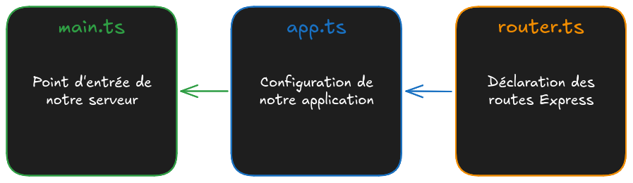

03 - JS Monorepo : Routing
Objectifs
- Comprendre la structure d'une application serveur
- Créer un premier "module"
- Découvrir les "actions"
Pré-requis
- 1
Valider la quête suivante
Quêtes liées - 2
Être complètement à l'aise avec la syntaxe pour déclarer une route sur une application Express
js// Déclaration d'une action const sayHello = (req, res) => { res.send("Hello World!"); }; // Association de l'action à une route app.get("/", sayHello); - 3
Prendre une grande respiration
Tu vas naviguer entre plusieurs fichiers dans cette quête : rappelle toi d'y aller étape par étape. Pose des questions si tu as un doute plutôt que de te perdre.
Sommaire
Introduction
Dans les épisodes précédents, tu as initialisé ton Monorepo et créé une route dans le fichier server/src/main.ts.
Pour rappel, l'architecture du dossier server dans laquelle tu vas avancer un peu plus :
server/
├── database/
│ └── // plus tard
├── src/
│ ├── modules/
│ │ ├── item/
│ │ │ ├── itemActions.ts
│ │ │ └── itemRepository.ts
│ │ └── ...
│ ├── app.ts
│ ├── main.ts // ✅
│ └── router.ts // MAINTENANT
├── tests/
│ └── // bien plus tard
├── .env
└── .env.sample
Tu as beaucoup de routes à créer pour ton projet Wild Series, et nous allons profiter de la suivante pour apprendre à créer des routes de façon organisée.
Le fichier app.ts
Revenons là où nous avons arrêté. Ouvre le fichier server/src/main.ts de ton projet :
// Load environment variables from .env file
import "dotenv/config";
// Check database connection
// Note: This is optional and can be removed if the database connection
// is not required when starting the application
import "../database/checkConnection";
// Import the Express application from ./app
import app from "./app";
/* ************************************************************************* */
// Declaration of a "Welcome" route
import type { RequestHandler } from "express";
const sayWelcome: RequestHandler = (req, res) => {
res.send("Welcome to Wild Series !");
};
app.get("/", sayWelcome);
/* ************************************************************************* */
// Get the port from the environment variables
const port = process.env.APP_PORT;
// Start the server and listen on the specified port
app
.listen(port, () => {
console.info(`Server is listening on port ${port}`);
})
.on("error", (err: Error) => {
console.error("Error:", err.message);
});
Et concentre toi sur cette ligne :
// Import the Express application from ./app
import app from "./app";
Elle importe le fichier ./app.ts. C'est là que tu vas poursuivre ton exploration !
Suivons la piste ensemble : ouvre le fichier server/src/app.ts.
Je ne vais pas reproduire le code ici : il y en a beaucoup trop... Faisons un peu le ménage :
// Load the express module to create a web application
import express from "express";
const app = express();
// ...BEAUCOUP de lignes à lire, jusqu'à :
// Import the API router
import router from "./router";
// Mount the API router under the "/api" endpoint
app.use(router);
// ...BEAUCOUP de lignes à lire, jusqu'à :
export default app;
Nous reviendrons sur le reste du fichier pendant ton parcours quand tu auras besoin de personnaliser la configuration de ton application. Ignore-le pour l'instant.
Concentre toi sur ce 2e import :
// Import the API router
import router from "./router";
Avant de suivre cette nouvelle piste, prenons des notes :

Mais pourquoi autant de fichiers ?
Durant tout ton parcours à travers ce monorepo, tu remarqueras que chaque fichier se limite essentiellement à une mission. Dans le dossier server :
- Le fichier
main.tslance le serveur. - Le fichier
app.tsconfigure l'application. - Le fichier
router.tsdéclare un ensemble de routes.
Cette limite respecte un des fondements de la Programmation Orientée Objet (POO), plus spécifiquement le "principe de responsabilité unique" (Single Responsibility Principle - SRP) : c'est le S des principes SOLID. Il stipule qu'une classe, un module ou, dans notre cas, un fichier doit avoir une seule responsabilité, une seule raison d'exister et donc une seule raison de changer. Cette approche a plusieurs avantages importants :
- Maintenance : Quand chaque fichier se concentre sur une seule responsabilité, il devient beaucoup plus facile à comprendre et à maintenir. Les modifications nécessaires sont isolées, ce qui réduit le risque d'introduire des bugs dans des parties du code qui n'ont pas de rapport entre elles.
- Réutilisation : En séparant les préoccupations, les fichiers deviennent réutilisables. Par exemple, si un module nécessite un outil déjà mis en place et isolé pour un autre module, tu pourras réutiliser ton outil.
- Test : Tester un fichier avec une seule responsabilité est beaucoup plus simple. Tu peux écrire des tests unitaires ciblés qui vérifient son comportement spécifique sans te préoccuper de son contexte.
En appliquant le Principe de Responsabilité Unique à la structure de tes fichiers, tu crées une base solide pour un projet qui est plus facile à comprendre, à maintenir et à étendre. Cela rend le travail d'équipe plus fluide et la gestion du code plus efficace, car chaque partie du système est bien délimitée.
Si tu souhaites en savoir plus sur les principes SOLID
Le fichier router.ts
Reprenons le fil de notre exploration. Ouvre le fichier router.ts dans ton dossier server/src. Tu peux y voir ce code :
import express from "express";
const router = express.Router();
/* ************************************************************************* */
// Define Your API Routes Here
/* ************************************************************************* */
// Define item-related routes
import itemActions from "./modules/item/itemActions";
router.get("/api/items", itemActions.browse);
router.get("/api/items/:id", itemActions.read);
router.post("/api/items", itemActions.add);
/* ************************************************************************* */
export default router;
Dès la deuxième instruction, tu peux noter un détail important :
const router = express.Router();
Router est une fonction du module express qui crée un objet spécial : un routeur. Un routeur est un objet qui permet de définir un ensemble de routes pour les utiliser sur une application Express.
Même si le vocabulaire se ressemble, les routes côté client que tu as faites avec React Router n'ont rien à voir avec les routes côté serveur que tu vas faire avec Express.
Une route côté React représente l'affichage d'une page, d'un composant. Une route côté Express représente un point d'entrée vers lequel envoyer une requête HTTP.
Déclare une route directement dans ce fichier router.ts en déplaçant celle que tu avais déclaré dans le fichier main.ts et en remplaçant app.get() en router.get(). Voici ce que tu dois obtenir :
import express from "express";
const router = express.Router();
/* ************************************************************************* */
// Define Your API Routes Here
/* ************************************************************************* */
// Define item-related routes
import itemActions from "./modules/item/itemActions";
router.get("/api/items", itemActions.browse);
router.get("/api/items/:id", itemActions.read);
router.post("/api/items", itemActions.add);
/* ************************************************************************* */
// Declaration of a "Welcome" route
import type { RequestHandler } from "express";
const sayWelcome: RequestHandler = (req, res) => {
res.send("Welcome to Wild Series !");
};
router.get("/", sayWelcome);
/* ************************************************************************* */
export default router;
// Load environment variables from .env file
import "dotenv/config";
// Check database connection
// Note: This is optional and can be removed if the database connection
// is not required when starting the application
import "../database/checkConnection";
// Import the Express application from ./app
import app from "./app";
// Get the port from the environment variables
const port = process.env.APP_PORT;
// Start the server and listen on the specified port
app
.listen(port, () => {
console.info(`Server is listening on port ${port}`);
})
.on("error", (err: Error) => {
console.error("Error:", err.message);
});
Vérifie que ton serveur est bien lancé (pour rappel, dans ta console : npm run dev).
Tu peux te rendre dans ton navigateur à l'adresse http://localhost:3310/ pour voir le résultat :
Welcome to Wild Series !
Les modules, des pièces de Lego
Revenons sur le fichier router.ts :
// ...
const router = express.Router();
// ...
import itemActions from "./modules/item/itemActions";
router.get("/api/items", itemActions.browse);
router.get("/api/items/:id", itemActions.read);
router.post("/api/items", itemActions.add);
// ...
Tu peux aller voir le fichier ./modules/item/itemActions.ts : il exporte un objet avec 3 "actions" (browse, read et add) que nous affectons ici à la variable itemActions. Nous l'utilisons ensuite sur le routeur avec ces lignes :
router.get("/api/items", itemActions.browse);
router.get("/api/items/:id", itemActions.read);
router.post("/api/items", itemActions.add);
En suivant ce modèle, tu peux ranger les actions dans des fichiers séparés, pour former une structure modulaire très flexible. Cette approche te permet de composer ton application comme si tu assemblais des pièces de LEGO. Chaque module est un bloc indépendant, responsable de gérer un ensemble spécifique d'actions.
Par exemple, nous avons un module item pour gérer les actions liées aux items. Nous pourrions aussi avoir un module user pour gérer les actions liées aux utilisateurs de l'application, et ainsi de suite.
Cela augmente la clarté et la maintenabilité de notre code. Au lieu d'avoir un fichier géant contenant toutes les actions, tu as plusieurs petits fichiers. Chacun se concentre sur une partie spécifique de ton application et tu peux les préfixer indépendamment.
Pour schématiser :

Tu peux créer autant de modules que nécessaires !
Actions : la logique des routes
Nous en avons parlé, un fichier ne doit avoir qu'une seule et unique utilité. Le routeur ne doit donc servir qu'à la déclaration des routes.
Tu dois séparer la déclaration des routes de leurs "actions".
Dans ce code :
const sayWelcome: RequestHandler = (req, res) => {
res.send("Welcome to Wild Series !");
};
router.get("/", sayWelcome);
La déclaration de la route (router.get(...) est déjà à part de l'action qu'elle déclenche (le callback sayWelcome).
Mais l'action est toujours présente dans le même fichier que la déclaration de la route, ce qui va à l'encontre du SRP (Single Responsibility Principle).
C'est le moment de créer ton premier module !
Crée le fichier server/src/modules/say/sayActions.ts et déplace la fonction sayWelcome dans ce fichier :
// Declare the action
import type { RequestHandler } from "express";
const sayWelcome: RequestHandler = (req, res) => {
res.send("Welcome to Wild Series !");
};
// Export it to import it somewhere else
export default { sayWelcome };
Puis dans server/src/router.ts :
import express from "express";
const router = express.Router();
/* ************************************************************************* */
// Define Your API Routes Here
/* ************************************************************************* */
// Define item-related routes
import itemActions from "./modules/item/itemActions";
router.get("/api/items", itemActions.browse);
router.get("/api/items/:id", itemActions.read);
router.post("/api/items", itemActions.add);
/* ************************************************************************* */
// Declaration of a "Welcome" route
import sayActions from "./modules/say/sayActions";
router.get("/", sayActions.sayWelcome);
/* ************************************************************************* */
export default router;
Ouvre la page http://localhost:3310/ pour t'assurer que ta route fonctionne toujours.
Tu as désormais une vue globale du système de Routing 🎉.
Récapitulatif
Pour ajouter des routes au server de ton projet, tu dois respecter le SRP (Single Responsability Principle) :
- Déclarer tes routes dans le fichier
router.tsdu dossierserver/src. - Déclarer l'action associée à ta route dans un fichier séparé dans le dossier
server/src/modules.
Challenge
Tu vas mettre en place la route GET /api/programs dans ton projet Wild Series, afin de servir la liste des séries.
User stories 📋
en tant que visiteur, je souhaite récupérer les données d'une série
en tant que contributeur, je souhaite ajouter une série
en tant que contributeur, je souhaite modifier une série
en tant que contributeur, je souhaite supprimer une série
In progress 🤸
en tant que visiteur, je souhaite récupérer la liste des séries
In review 🧐
Done ✅
initialisation du projet
Pour t'aider, voici le code de l'action à ajouter dans ton projet, dans ton dossier server/src/modules :
// Some data to make the trick
const programs = [
{
id: 1,
title: "The Good Place",
synopsis:
"À sa mort, Eleanor Shellstrop est envoyée au Bon Endroit, un paradis fantaisiste réservé aux individus exceptionnellement bienveillants. Or Eleanor n'est pas exactement une « bonne personne » et comprend vite qu'il y a eu erreur sur la personne. Avec l'aide de Chidi, sa prétendue âme sœur dans l'au-delà, la jeune femme est bien décidée à se redécouvrir.",
poster:
"https://img.betaseries.com/JwRqyGD3f9KvO_OlfIXHZUA3Ypw=/600x900/smart/https%3A%2F%2Fpictures.betaseries.com%2Ffonds%2Fposter%2F94857341d71c795c69b9e5b23c4bf3e7.jpg",
country: "USA",
year: 2016,
},
{
id: 2,
title: "Dark",
synopsis:
"Quatre familles affolées par la disparition d'un enfant cherchent des réponses et tombent sur un mystère impliquant trois générations qui finit de les déstabiliser.",
poster:
"https://img.betaseries.com/zDxfeFudy3HWjxa6J8QIED9iaVw=/600x900/smart/https%3A%2F%2Fpictures.betaseries.com%2Ffonds%2Fposter%2Fc47135385da176a87d0dd9177c5f6a41.jpg",
country: "Allemagne",
year: 2017,
},
];
// Declare the action
import type { RequestHandler } from "express";
const browse: RequestHandler = (req, res) => {
res.json(programs);
};
// Export it to import it somewhere else
export default { browse };
Pour l'instant, c'est un tableau de données "en dur" que tu vas envoyer au format JSON dans la réponse HTTP avec l'instruction res.json(programs).
Maintenant :
- Crée la route
GET /api/programsdans le fichierserver/src/router.ts. - Crée une page
/programsdans ton application côtéclient. La page doit fetcher la routeGET /api/programsde tonserveret afficher les séries.
Pousse ton projet sur GitHub, et partage le lien de ton dépôt pour valider ta quête.
Critères de validation
- [ ] Le projet est disponible sur GitHub.
- [ ] Le fichier
server/.envn'a pas été push. - [ ] Quand tu clones le projet et lance les applications avec
npm run dev:- [ ] la page
http://localhost:3310/api/programsaffiche la liste des séries dans ton navigateur au format JSON. - [ ] la page
http://localhost:3000/programsaffiche la liste des séries dans ton navigateur.
- [ ] la page
// Load environment variables from .env file
import "dotenv/config";
// Check database connection
// Note: This is optional and can be removed if the database connection
// is not required when starting the application
import "../database/checkConnection";
// Import the Express application from ./app
import app from "./app";
// Get the port from the environment variables
const port = process.env.APP_PORT;
// Start the server and listen on the specified port
app
.listen(port, () => {
console.info(`Server is listening on port ${port}`);
})
.on("error", (err: Error) => {
console.error("Error:", err.message);
});
import express from "express";
const router = express.Router();
/* ************************************************************************* */
// Define Your API Routes Here
/* ************************************************************************* */
// Define item-related routes
import itemActions from "./modules/item/itemActions";
router.get("/api/items", itemActions.browse);
router.get("/api/items/:id", itemActions.read);
router.post("/api/items", itemActions.add);
// Define program-related routes
import programActions from "./modules/program/programActions";
router.get("/api/programs", programActions.browse);
/* ************************************************************************* */
// Declaration of a "Welcome" route
import sayActions from "./modules/say/sayActions";
router.get("/", sayActions.sayWelcome);
/* ************************************************************************* */
export default router;
// Some data to make the trick
const programs = [
{
id: 1,
title: "The Good Place",
synopsis:
"À sa mort, Eleanor Shellstrop est envoyée au Bon Endroit, un paradis fantaisiste réservé aux individus exceptionnellement bienveillants. Or Eleanor n'est pas exactement une « bonne personne » et comprend vite qu'il y a eu erreur sur la personne. Avec l'aide de Chidi, sa prétendue âme sœur dans l'au-delà, la jeune femme est bien décidée à se redécouvrir.",
poster:
"https://img.betaseries.com/JwRqyGD3f9KvO_OlfIXHZUA3Ypw=/600x900/smart/https%3A%2F%2Fpictures.betaseries.com%2Ffonds%2Fposter%2F94857341d71c795c69b9e5b23c4bf3e7.jpg",
country: "USA",
year: 2016,
},
{
id: 2,
title: "Dark",
synopsis:
"Quatre familles affolées par la disparition d'un enfant cherchent des réponses et tombent sur un mystère impliquant trois générations qui finit de les déstabiliser.",
poster:
"https://img.betaseries.com/zDxfeFudy3HWjxa6J8QIED9iaVw=/600x900/smart/https%3A%2F%2Fpictures.betaseries.com%2Ffonds%2Fposter%2Fc47135385da176a87d0dd9177c5f6a41.jpg",
country: "Allemagne",
year: 2017,
},
];
// Declare the action
import type { RequestHandler } from "express";
const browse: RequestHandler = (req, res) => {
res.json(programs);
};
// Export it to import it somewhere else
export default { browse };
// ...
/* ************************************************************************* */
// Import the main app component
import App from "./App";
// Import additional components for new routes
// Try creating these components in the "pages" folder
// import About from "./pages/About";
// import Contact from "./pages/Contact";
import ProgramIndex from "./pages/ProgramIndex";
/* ************************************************************************* */
// Create router configuration with routes
// You can add more routes as you build out your app!
const router = createBrowserRouter([
// ...
{
path: "/programs",
element: <ProgramIndex />,
loader: () => fetch(`${import.meta.env.VITE_API_URL}/api/programs`),
},
// ...
]);
/* ************************************************************************* */
// ...
import { useLoaderData } from "react-router-dom";
type Program = {
id: number;
title: string;
};
function ProgramIndex() {
const programs = useLoaderData() as Program[];
return (
<ul>
{programs.map((program) => (
<li key={program.id}>{program.title}</li>
))}
</ul>
);
}
export default ProgramIndex;